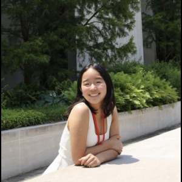

About Us

Kathryn Shin
Growing up in the classics community, Kathryn has been involved in NJJCL and the NLE since eighth grade. She has entered many of these exams and competed in rounds of Certamen.
After winning the regional Certamen competition at Princeton University twice and earning gold on the NLE exam, she realized the importance of having classics resources located in one place.
She wanted a resource that would give students independent daily practice, so they would not have to create new Quizlets or find someone to quiz them every time. While preparatory packets and past exams exist, there is no standard resource that organizes everything together.